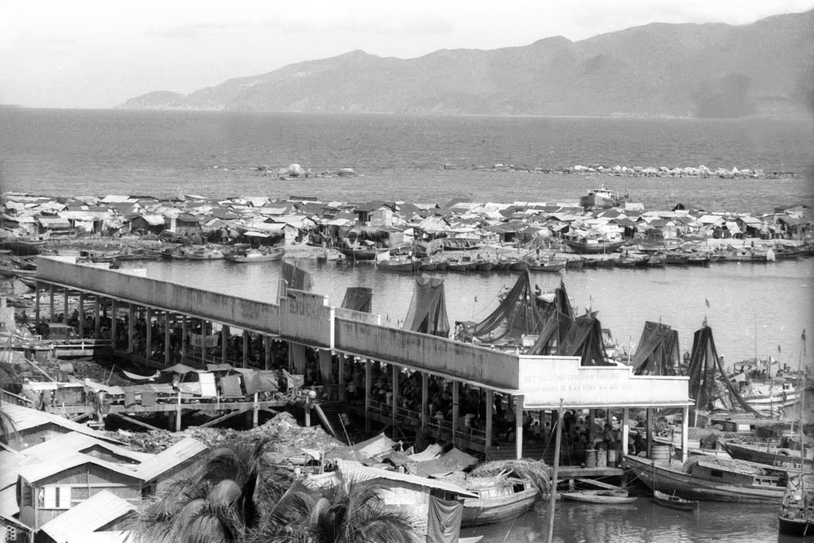
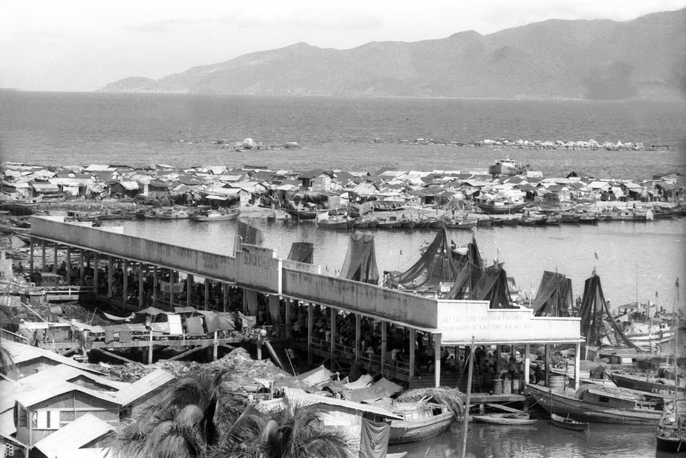
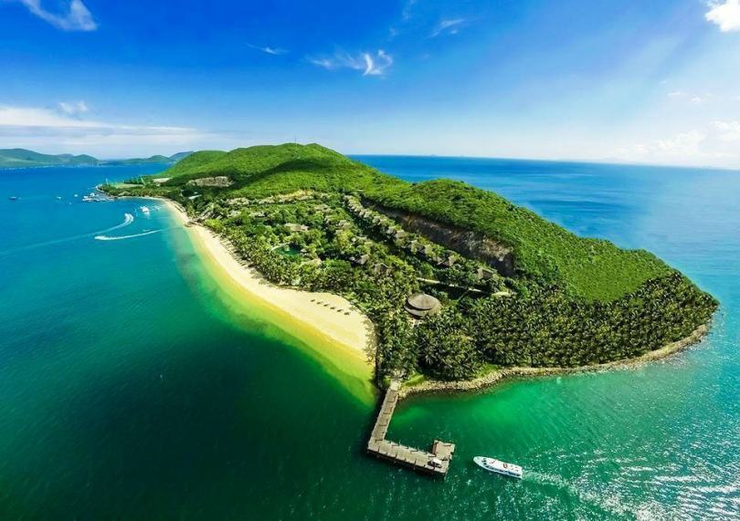
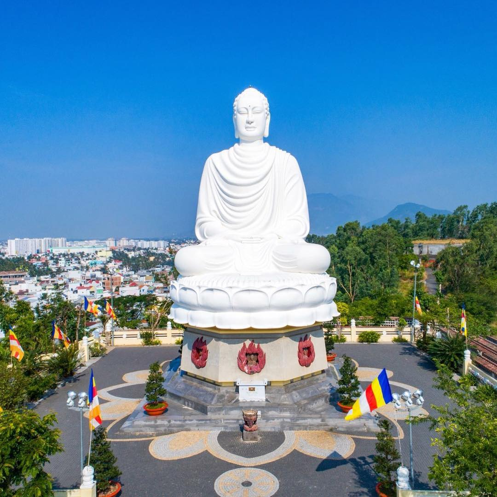

Giới thiệu
Là một thành phố ven biển và là trung tâm chính trị, kinh tế, văn hóa, khoa học kỹ thuật và du lịch của tỉnh Khánh Hòa, Việt Nam. Các địa điểm du lịch nổi tiếng


Ẩm thực
Hải sản
Đi biển thì tất nhiên không thể bỏ qua hải sản rồi. Vựa hải sản là linh hồn trong văn hóa ẩm thực Nha Trang, vừa tươi, vừa ngọt, lại dai và giòn thịt. Ngoài cua, ốc, tôm, nghêu, sò, Nha Trang còn nổi tiếng với món nhum, cá tắc kè nướng chấm muối ớt, cồi mai, tôm tít… Tất cả đều là những cực phẩm của biển khơi.
Bò nướng lạc cảnh
Món ăn này đã trở thành một thương hiệu không thể không nhắc đến trong bản đồ ẩm thực Nha Trang. Bò nướng Lạc Cảnh thần thánh ai thử rồi cũng đều ngây ngất bởi những miếng thịt bò mềm, thơm lại thấm gia vị tẩm ướp, ăn với đậu bắp nướng, rau sống (xà lách, cà chua, dưa leo, hành tây thái mỏng). Ăn bò nướng cùng muối tiêu chanh nữa thì không chê vào đâu được.
Nem nướng Ninh Hòa
Thịt heo tươi còn ấm, xay nhuyễn, thêm gia vị vừa ăn, nặn xung quanh cây đũa tre và nướng chính trên than hồng. Nghe tới đây là cũng tưởng tượng được mùi vị quen thuộc của ẩm thực Nha Trang rồi. Nem nướng xong vừa thơm, vừa mềm, không quá nạc, cũng không quá mỡ.
Lịch sử
Lịch sử Từ năm 1653 đến giữa thế kỷ XIX, Nha Trang vẫn là một vùng đất còn hoang vu và nhiều thú dữ thuộc Hà Bạc, huyện Vĩnh Xương, phủ Diên Khánh. Chỉ qua hai thập niên đầu thế kỷ XX, bộ mặt Nha Trang đã thay đổi nhanh chóng. ... Thời Pháp thuộc, Nha Trang được coi là tỉnh lỵ (chef lieu) của tỉnh Khánh Hòa.
 

Các địa điểm du lịch, văn hóa
1. Vinpearl Land
Địa chỉ: 98B/13, Trần Phú, Lộc Thọ, Thành phố Nha Trang, Khánh Hòa
Imperial-20 Trần Phú, Vĩnh Nguyên, Thành phố Nha Trang, Khánh Hòa, Việt Nam Giá từ 450,000đ / đêm
Pragonvilla hotel Lô 203 Khu An Viên, Phường Vĩnh Nguyên, Thành phố Nha Trang, Khánh Hòa Giá từ900,000đ / đêm

2. Viện Hải Dương học
- Địa chỉ: số 1, Cầu Đá, Trần Phú, thành phố Nha Trang, tỉnh Khánh Hòa.
Viện Hải dương học Nha Trang là nơi nghiên cứu đời sống các loài động thực vật biển tại thành phố Nha Trang tỉnh Khánh Hòa.Viện này được thành lập vào năm 1923 có địa chỉ tại số 1 Cầu Đá, cách trung tâm thành phố Nha Trang khoảng 6km về phía Đông Nam( cre: vntrip) Địa điểm du lịch này có trên 20.000 mẫu vật của 4.000 loại sinh vật biển được lưu giữ, sưu tầm và nuôi dưỡng trong nhiều năm. Đặc biệt, đây còn là nơi trưng bày một bộ xương cá voi khổng lồ có chiều dài gần 26m, cao 3m với 48 đốt sống đã được phục chế rất đầy đủ. Du khách đến đây sẽ được tham quan khu thí nghiệm, ngắm các sinh vật lạ và biết thêm nhiều điều về cuộc sống của các loài sinh vật ở biển.(cre: vntrip.vn)
Nơi đây thích hợp cho những bạn trẻ và những người say mê nghiên cứu cũng như có đam mê về lịch sử đại dương và quá trình tiến hóa các sinh vật biển

3. Đảo Hòn Mun
Địa chỉ: Cuối đường Trần Phú, thành phố Nha Trang. Đây là một hòn được mệnh danh là một hòn đảo thơ mộng nhất Nha Trang. Hòn đảo chinh phục bất kì trái tim khách du lịch nào đặt chân đến nơi đây bởi bãi cát trắng trải dài bất tận, bãi biển xanh rờn với những tổ yến hoang sơ cheo leo trên vách đá.( cre: vntrip.vn)
Là nơi dành cho những bạn có niềm đam mê khám phá sinh vật biển cùng với những trải nghiệm như lặn biển ngắm san hô, bar trên mặt biển và khám phá biển bằng tàu nhầm kính. Bãi biển ở đây cũng rất trong xanh và mát mẻ

4. Đảo Hòn Tằm
Địa chỉ: Vĩnh Nguyên, Tp Nha Trang, Khánh Hoà
Đảo Hòn Tằm nằm cách thành phố Nha Trang 7 km, là một điểm du lịch Nha Trang, trải nghiệm nhất định bạn phải ghé qua khi tới với thành phố. Đảo Hòn Tằm đẹp mộng mơ với những hàng dừa chạy dọc trên bãi biển xanh ngát. ( cre: vntrip.vn)
Ẵm thực nơi đây là thứ thu hút du khách nhiều nhất với những loại hải sản tươi sống cùng với các đặc sản đậm chất Nha Trang. Nơi đây cũng là nơi du khách trải nghiệm văn hóa làng nghề như dệt may, làm đồ mỹ nghệ hay thưởng thức những tiếng hát du dương đã là nét đẹp văn hóa với cư dân nơi đây từ lâu đời.
Resort MerPerle Hom Tam Hòn Tằm , Vĩnh Nguyên, Thành Phố Nha Trang, Khánh Hòa Giá từ2,015,000đ / đêm

5. Nhà thờ Đá Nha Trang
Địa chỉ: 31 Thái Nguyên, Phước Tân, Thành phố Nha Trang, Khánh Hòa
Nhà thờ Đá Nha Trang là một địa danh nổi tiếng của thành phố, nơi đây mang nhiều giá trị lịch sử và văn hóa hơn một nhà thờ tôn giáo thông thường. Như một nhân chứng lịch sử, Nhà thờ Đá đã chứng kiến bao sự đổi thay theo thời gian của thành phố này, và giờ đây, chính nó cũng là cảnh quan xinh đẹp, góp phần làm nên sức hút cho thành phố biển mộng mơ.
6. Chùa Long Sơn
Địa chỉ: 20 Đường 23/10, Phương sơn, Thành phố Nha Trang, Khánh Hòa
Nhắc đến địa điểm du lịch Nha Trang không thể bỏ qua địa danh chốn linh thiêng Chùa Long Sơn – Long Sơn Tự, đặc biệt nổi tiếng với Kim Thân Phật Tổ như là một biểu tượng đẹp của thành phố. Vẻ đẹp của Nha Trang đa dạng theo thời gian và từng địa điểm, lúc tấp nập nơi phố phường nhộn nhịp, lúc hoang sơ yên bình nơi biển đảo mênh mông và không thể thiếu được cố là không gian trầm mặc thanh tịnh chốn Long Sơn an yên.

Khách sạn và homestay
1. Alpha Bird Nha Trang
Atlantic Nha Trang Hotel